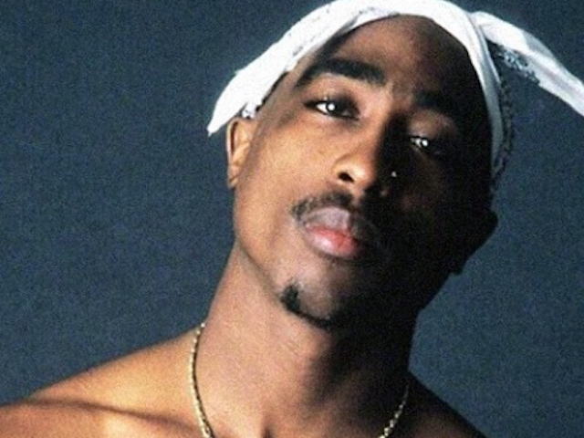
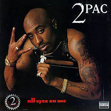
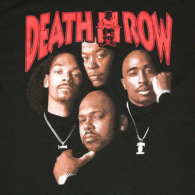
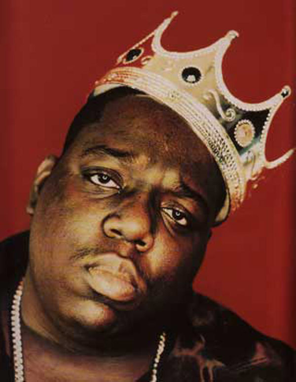

He began his career as a roadie and backup dancer with the alternative hip hop group Digital Underground in 1990. He performed with the band for the soundtrack of the movie ‘Nothing but Trouble’ and also appeared in the film in 1991.
He released his debut solo album ‘2Pacalypse Now’ by the end of 1991. It featured content on racism, poverty, violence, and teenage pregnancy. It generated considerable controversy, and made the rapper very popular.
His second album, ‘Strictly 4 My N.I.G.G.A.Z’ was out in 1993. It was more successful than its predecessor and contained the hits ‘Keep Ya Head Up’ and ‘I Get Around’.
He formed a group Thug Life along with musicians Big Syke, Mopreme Shakur, Rated R and others. They released one album ‘Thug Life: Volume 1’ in 1994. The album was certified Gold in the U.S.
Around this time he had several brushes with the law and was shot in an armed robbery case. After recovering from the shooting, he was sent to prison on a sexual assault charge. He read a lot of books during imprisonment and also continued working on his music.
He released the album ‘Me Against the World’ in 1995 while serving his prison term. The album was an immediate hit and debuted at number one on the Billboard 200. It is considered one of the most influential hip hop albums of all-time.
The album ‘All Eyez on Me’ released in 1996 was the last one released during his lifetime. It featured five singles and went multi Platinum just months after its release. It featured the hits ‘How Do U Want It’ and ‘California Love’.


Christopher Wallace, aka Biggie Smalls and the Notorious B.I.G., lived a short life. He was 24 years old when he was gunned down in 1997 in Los Angeles, a murder that has never been solved. Smalls was from New York and had almost single-handedly reinvented East Coast hip hop — overtaken in the early 1990s by the West Coast "g-funk" sound of Dr. Dre and Death Row Records. With his clear, powerful baritone, effortless flow on the mic and willingness to address the vulnerability, as well as the harshness, of the hustler lifestyle, Smalls swung the spotlight back towards New York and his label home, Bad Boy Records. He styled himself as a gangster and although he was no angel, in reality he was more of a performer than a hardened criminal. In this regard, he was similar to Tupac Shakur, his one-time friend turned bitter rival — a contest that spiraled horrifyingly out of control leaving neither man alive to tell the tale.The Notorious B.I.G.'s debut album came out on Bad Boy in September 1994, a month after "Juicy," his first single for the label. The album, Ready to Die, was certified gold within two months, double-platinum the following year, and eventually quadruple-platinum. "Big Poppa," the second of the album's four singles, was nominated for a Grammy for best rap solo performance.